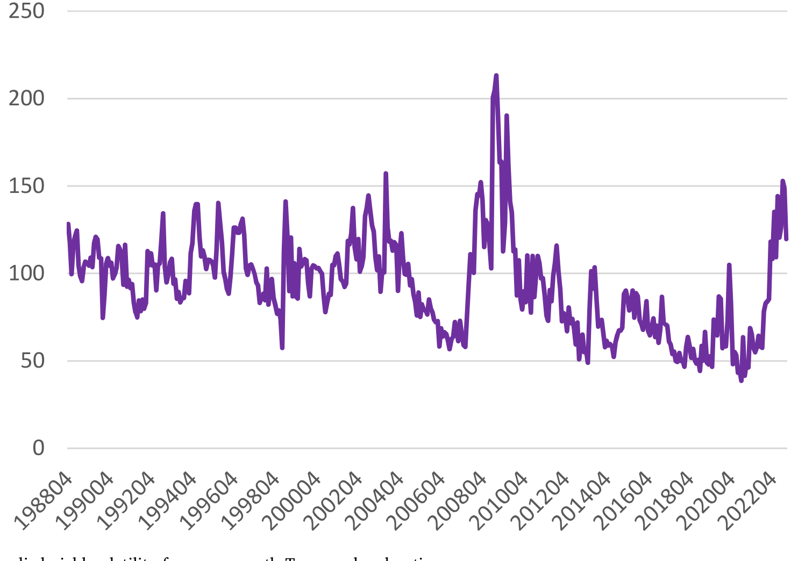
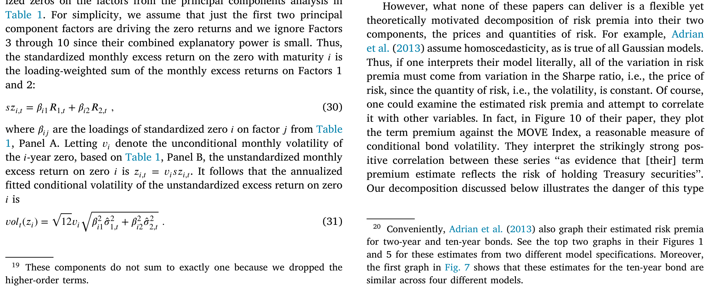
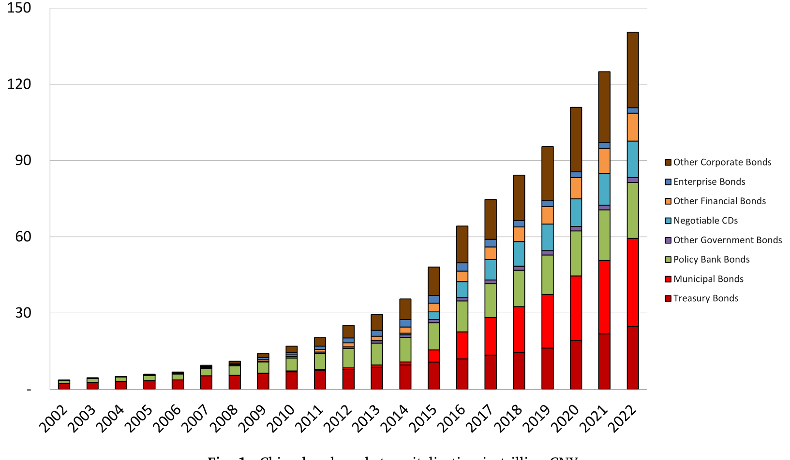
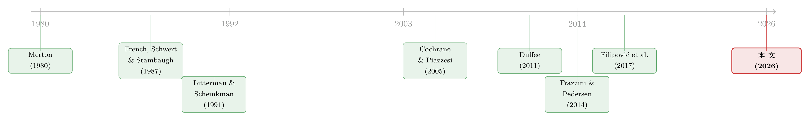

风险的价格与数量：拆开中美国债的「风险-收益之谜」
本文读的是 Carpenter, Lu & Whitelaw (2026, Journal of Financial Economics)：他们借鉴股票市场「风险-收益」研究的思路，放弃那些为了得到债券价格封闭解而层层设限的期限结构模型，转而直接估计国债因子组合的「波动率」与「夏普比率」如何随时间联合演变。结论是——债券风险溢价的「价格」与「数量」之间存在远比现有模型所能容纳的更复杂、更随时间变化的关系；而中美两个几乎隔绝的市场，却共享着惊人相似的因子结构。
1 一个被「封闭解」绑架的领域
先从一个老问题说起。
在股票市场里，有一个出了名「测不准」的关系：风险与收益。直觉上，承担更高的波动，就该换来更高的期望收益。可当人们真的把这件事拿去做条件估计时，结果却屡屡令人尴尬。French、Schwert 与 Stambaugh (1987)、Glosten、Jagannathan 与 Runkle (1993)、以及 Whitelaw (1994) 都发现：条件期望收益与条件波动率之间的关系微弱，甚至为负——尽管无条件的股权风险溢价明明很大。Merton (1980) 大概是这条文献的开山之作，他一上来就提醒大家：这是一个极其棘手的计量环境。
那么，一个自然的问题是：换到债券市场，会不会干净一些？
毕竟，债券没有股票那种缠绕不清的现金流风险（cash flow risk）。一张无违约的国债，它未来的名义现金流是写死的，价格的全部不确定性都来自利率。按理说，这应该是研究「风险-收益」关系更自然的起点。
但麻烦在于，债券文献长期被一类模型「绑架」了。期限结构（term structure）的主流模型——从仿射模型 (affine term structure models, Duffie and Kan, 1996)，到各类高斯模型 (Gaussian term structure models)——它们的首要任务是拟合债券价格、给利率衍生品定价。为了凑出价格的封闭解（closed-form），这些模型必须给风险的「价格」和「数量」之间套上极紧的约束。Dai 与 Singleton (2000)、Duffee (2002) 早就指出：仿射模型要想容纳随机波动率（stochastic volatility），就只能在风险价格与风险数量的函数形式之间强行绑定。更糟的是，这类模型通常隐含「收益率张成（span）了一切关于风险溢价的信息」，从而在「刀刃」（knife-edge）之外，一概排除了未张成的随机波动率（unspanned stochastic volatility, Collin-Dufresne and Goldstein, 2002）。
可现实呢？现实是图 2 里那条上蹿下跳的 MOVE 指数——它度量的是一篮子美债期权所隐含的收益率波动率。这条曲线明明白白地告诉我们：债券的隐含波动率是随机变化的。任何假设「风险中性测度下波动率为常数」的模型，从一开始就和这张图过不去。

Figure 2: MOVE index of implied yield volatility from one-month Treasury bond options
于是作者亮出了他们的立场：与其被封闭解牵着鼻子走，不如学一学股票收益的文献——不去拟合价格，让数据自己说话，但仍然守住那条底线：无套利（no arbitrage）。
2 先把「债券组合收益」造出来
要研究债券的风险与收益，第一道坎其实很朴素：没有现成的债券组合收益序列可用。
作者的做法是：用美债（UST）和中债（CGB）的关键期限票面利率（par rates），先拟合一条三次指数样条（cubic exponential spline），反解出隐含的零息利率，再算出 1 到 10 年期零息债（zero-coupon bonds）的月度超额收益。数据上，美国来自 FRED，中国来自 WIND。然后——这是关键一步——对这十条标准化后的零息债超额收益做主成分分析（principal components analysis, PCA），把整个债券市场压缩成两个因子组合。
为什么是「组合」而非「单券」？因为用组合收益能绕开困扰这条文献已久的测量误差问题：当你用同期限的远期利率去预测同一张债券的收益时，同一个价格、同一份测量误差会同时出现在回归方程的两侧；而预测一个跨多期限的组合收益时，这种共同测量误差就被大大稀释了。
结果出奇地干净。在美债的后沃尔克（post-Volcker）时期，第一主成分（Factor 1）解释了标准化零息收益总方差的 91%，第二主成分（Factor 2）解释 7%；在中债里，这两个比例是 82% 和 14%——第二因子在中国更重要。沿着 Litterman 与 Scheinkman (1991) 的经典发现，Factor 1 对应收益率曲线的水平（level）移动，Factor 2 对应斜率（steepness）移动。有意思的是，这一点在中美两个市场都成立。

Table 1: For simplicity, we assume that just the first two principal
更妙的是夏普比率（Sharpe ratio）的结构。后沃尔克时期，美债 Factor 1 组合的年化夏普比率是 0.64，而 Factor 2 组合竟高达 0.73。这第二个因子，正是理解整篇论文的钥匙。
3 第二个因子，与「赌久期」之谜
接着，一个长期困扰固定收益研究者的反常现象登场了。
Duffee (2011b) 与 Frazzini 和 Pedersen (2014) 都记录过一个「赌久期」（betting-against-duration）的模式：国债的夏普比率随期限递减——短债的风险调整后收益反而更高。Frazzini 与 Pedersen (2014) 把股票里类似的「赌 beta」现象归因于受杠杆约束的投资者哄抬高 beta 资产。可在债券市场，这套解释站不住脚：回购（repo）市场让加杠杆变得轻而易举，根本谈不上「杠杆约束」。
那么短债凭什么夏普比率更高？
作者给出的答案，恰恰是那个被很多模型忽视的第二因子。Factor 2 是「做多短期、做空长期」的组合——短债在它上面正向载荷，长债负向载荷。正因为存在这样一个被定价的第二因子，短债才在风险调整后显得格外划算。一个单因子结构（很多近期文献，如 Cochrane 和 Piazzesi (2005)、Cieslak 和 Povala (2015)，都强调期望收益里只有一个主导因子）会隐含「所有债券夏普比率近似相等」，这与数据中夏普比率陡峭递减的事实直接冲突。
于是，「赌久期」不是什么异象，它只是第二因子被定价的一个自然推论。
而真正令人吃惊的，是中国的数据。中国证券市场与全球高度隔绝，外资持有比例有限，中债因子组合收益与美债因子组合收益的相关性极低——最高的一对（CGB Factor 1 与 UST Factor 1）也只有 22%。可即便如此，中债同样呈现夏普比率随期限递减、同样有一个「做多短、做空长」的第二因子。两个几乎不相往来的市场，长出了同一副骨架。这暗示：这种因子结构，也许是无违约债券收益的内在属性，而非美国市场的特产。
4 模型：把「价格」和「数量」拆开
但要把「风险」和「溢价」真正分开来谈，光有 PCA 还不够，得有一个无套利的框架。这是全文的理论核心，值得一步步走。
设有 \(n\) 个风险资产，其价格过程为
$$\frac{dS_{i,t}}{S_{i,t}} = \mu_{i,t}\,dt + \sigma_{i,t}\,dB_t$$
其中 \(r_t\)、漂移 \(\mu_{i,t}\) 与 \(d\) 维行向量 \(\sigma_{i,t}\) 都是适配于布朗运动 \(B_t\) 所生成信息流的随机过程。一个自融资（self-financing）组合，在资产 \(i\) 上投入价值 \(\pi_{i,t}\)，其价值 \(W_t\) 满足
$$dW_t = \big(r_t W_t + \pi_t(\mu_t - r_t\mathbf{1})\big)\,dt + \pi_t\sigma_t\,dB_t$$
无套利条件说的是一件直觉上无比朴素的事：如果一个组合的瞬时风险为零，那它的风险溢价也必须为零。用符号写，就是：若 \(\pi_t\sigma_t = 0\)，则必有 \(\pi_t(\mu_t - r_t\mathbf{1}) = 0\)。否则你就能造出一个局部无风险、却以高于 \(r_t\) 的速率升值的组合——这就是套利。
这个条件在代数上等价于：存在一个 \(d\) 维向量过程 \(\theta_t\)，使得
$$\sigma_t\theta_t = \mu_t - r_t\mathbf{1}$$
这个 \(\theta_t\) 就是大名鼎鼎的「风险的市场价格」（market price of risk），简称风险价格。有了它，我们就能把任意资产的超额收益重写成一个极有解释力的形式：
看出门道了吗？一张债券（或一个因子组合）的条件风险溢价，被干干净净地拆成了两块：风险的数量 \(\sigma_{i,t}\)（波动率），乘以风险的价格 \(\theta_t\)。换言之，对一个因子组合而言，其条件夏普比率正是风险价格在该因子方向上的投影，而风险溢价 = 波动率 × 夏普比率。
这套语言的威力在于：它顺手就给出了一个对应的随机贴现因子（stochastic discount factor, SDF）
$$M_t = \exp\!\Big(-\!\int_0^t r_s\,ds - \!\int_0^t \theta_s'\,dB_s - \tfrac{1}{2}\!\int_0^t |\theta_s|^2\,ds\Big)$$
使得 \(S_{i,t} = \mathbb{E}_t[M_u S_{i,u}/M_t]\) 对一切 \(t
关键在于：作者不去给 \(\theta_t\) 和 \(\sigma_t\) 强加任何封闭解所需的函数形式。他们把离散时间下的对应式当作经验设定的蓝本，把每个因子的条件波动率和条件夏普比率都写成一组预测变量的函数，然后让数据去回答这两者究竟如何联合演变。
5 让数据说话：GMM 与三个发现
主分析是一场对「条件波动率过程」和「条件夏普比率过程」联合动态的广义矩估计（generalized method of moments, GMM）。预测变量上，中美都用了传统的收益率曲线变量与滞后的已实现波动率；美国还额外加入了 VIX——一个不被收益率曲线张成（unspanned by yields）的重要预测变量；并设了一个「零下界」（zero lower bound, ZLB）指示变量，允许系数在短端利率贴近零的时期切换。
三个发现，层层递进。
其一，第二因子虽小，却不可或缺。 它解释了为何中美两国的无条件夏普比率都随期限递减。两个隔绝市场共享同一因子结构这件事本身，就把「这是美国特色」的说法证伪了。
其二，波动率与夏普比率的联合动态，复杂得超出现有模型的容纳能力。 在美国的基准模型里，第一因子的条件夏普比率与条件波动率高度正相关——这正是均衡模型对「与总消费相关的风险因子」所预测的，也解释了为什么封闭解模型在美国数据上「看起来」很成功。可一旦把 ZLB 指示变量加进来，这个相关性就显著下降，因为在零下界时期二者的相关性大幅走低。第二个美国因子也是同样：基准下正相关且相当高，加入 ZLB 后显著回落。这些复杂特征，是现有那些产出封闭解债券价格的理论模型几乎不可能容纳的。
而中国数据更是把「灵活性」的必要性顶到了台面上：两个因子在全样本里都呈现条件波动率与夏普比率的负相关，但在更短的窗口里，这个相关性在正负之间大幅摆动。中债 Factor 1 的负相关，主要由两段激进货币政策干预期里「波动率骤降、夏普比率骤升」所驱动——2008 年金融危机与 2015 年股灾。
这是一个漂亮的跨市场呼应：美国的 ZLB、中国的 2008 与 2015，本质上都是激进货币政策干预导致风险的「价格」与「数量」发生解耦（decoupling）。「能拟合美国常态数据」绝不等于「抓住了无违约债券收益的本质」。

Figure 1: China bond market capitalization in trillion CNY
（顺带一提，中国债券市场近年的扩张是这项研究得以成立的前提：到 2023 年底，中国债市总市值已达 21 万亿美元，对照美国债市的 59 万亿美元；其中中债占中国债市约 21%，而美债占美国债市约 42%。）
其三，也是最干净的一击：债券风险溢价确实「仅仅是风险的补偿」。 无套利理论预言：当波动率趋于零，风险溢价也应趋于零。作者无法拒绝这一假设——风险的「数量」归零，溢价随之归零。这件事看似不出奇，却与股票文献里那个「风险-收益关系微弱甚至为负」的尴尬结论形成鲜明对比。而且施加这条约束后，估计的功效（power）反而提升、结果更加锐利。换句话说，这条无套利检验顺便给整套经验设定颁发了一张「合理性」证书：预测变量的选择、波动率与夏普比率的函数形式，都足以抓住数据的关键特征。
6 文献脉络
把这篇论文放回它所在的河流里，脉络会清晰很多。
源头是股票市场的「风险-收益」之争。Merton (1980) 点出计量环境之难，French、Schwert 与 Stambaugh (1987) 给出经典的条件估计，发现这关系出奇地不稳。与此并行的是债券因子结构的奠基——Litterman 与 Scheinkman (1991) 用主成分把债券收益拆成水平、斜率、曲率三个共同因子，这套语言至今仍是固定收益研究的通用坐标。

随后债券风险溢价的文献一分为二。一支沿着 Fama 与 Bliss (1987)、Cochrane 与 Piazzesi (2005)、Ludvigson 与 Ng (2009) 走，专注于挖掘对预期假说（Expectations Hypothesis）的违背、刻画风险溢价的时变、寻找远期利率与宏观因子这类预测变量。另一支沿着 Ang 与 Piazzesi (2003)、Joslin、Singleton 与 Zhu (2011)、Adrian、Crump 与 Moench (2013)、Duffee (2011b) 走，在高斯期限结构模型里工作——这类模型让债券价格的波动率是确定性的，于是被迫让夏普比率「一个人扛下所有」时变。Frazzini 与 Pedersen (2014) 则贡献了「赌 beta / 赌久期」这块拼图。
更晚近，Filipović、Larsson 与 Trolle (2017) 用线性-有理（linear-rational）模型试图在保留封闭解的同时容纳未张成的波动率，Creal 与 Wu (2020) 用消费基础的均衡模型同时纳入随机波动率与风险价格——但它们仍各自施加着紧约束。本文正是站在这两支的交汇处，向前迈出一步：放弃封闭解的执念，但守住无套利，并且第一次把中国国债（CGB）的定价证据系统地摆上桌面。
7 评论与延伸（Q&A + 研究方向）
(a) 几个可能的疑问
Q：这套方法「不拟合价格」，听起来是不是反而比期限结构模型更弱？
是有代价的。作者自己也承认：他们不去建模真实的无风险利率过程，也不利用「拟合观测价格水平」这一信息源。一个完整设定的期限结构模型当然更有力——前提是它设定正确。一旦模型被错误设定，任何经验结果都极难解释。鉴于本文（尤其在加入 ZLB 后的美国与整个中国样本里）记录到的复杂特征，「模型错误设定」恰恰是一个真实的隐患。在这种环境下，少设一些约束、让数据多说话，反而更稳健。
Q：「风险溢价随波动率归零」这个无套利检验，会不会本来就很容易通过、没什么信息量？
它的信息量恰恰来自对照。在股票里，人们反复发现风险-收益关系微弱甚至为负——若把同样的检验搬到股票，未必能这么干净地通过。债券能通过，说明在剥离了现金流风险之后，「溢价是风险的补偿」这条朴素命题确实更接近成立。而且施加该约束后估计功效上升，也反过来佐证了经验设定的合理性。
Q：中美因子结构如此相似，会不会只是 PCA 的机械产物？
这是个好顾虑，但有几道防线。其一，两个市场的因子载荷形态（Factor 1 近似等权、Factor 2 做多短做空长）在不同子样本、不同市场里都稳定复现；其二，两市收益相关性极低（最高
22%），机械同构难以解释；其三，作者用真实交易的美债 ETF（而非合成零息债）复核了美国的因子结构与表现模式，排除了样条插值带来的测量误差伪影。
Q：外资持有比例上升，会不会污染中国的结论？
作者明确把这列为隐患：作为新兴市场，中债至少从外国投资者视角看存在政治风险；样本期内全球央行与外资参与度上升，带来非平稳（non-stationarity）的担忧。他们为此做了一些量化其潜在影响的努力，但这确实是中国结论里最该打问号的地方。
Q：为什么偏偏是 VIX，而不是别的宏观变量进入美国的设定？
因为 VIX 是一个不被收益率曲线张成的预测变量。仿射/高斯模型通常隐含「收益率张成一切」，从而排除未张成的随机波动率。引入 VIX，等于在经验上给「未张成波动率」开了一扇门，这正是封闭解模型最难处理的部分。至于宏观因子相对收益率曲线是否有增量预测力，本身仍是悬而未决的争论（Bauer and Hamilton, 2018），但这与本文主旨并不冲突。
Q：ZLB 让相关性下降，和中国 2008/2015 让相关性变负，是同一回事吗？
机制上高度平行：两者都对应激进货币政策干预，都导致风险的价格与数量发生解耦。区别在于触发场景——美国是利率撞上零下界，中国是危机期的强力宽松。把它们并置，恰恰说明这种「解耦」不是某国制度的偶然，而是政策强干预下的某种共性。
(b) 几个可能的研究问题与提案
1. 把这套「价格 × 数量」分解搬到公司债 / 信用市场。
【经济故事】公司债的超额收益里既有利率风险，也有信用风险与流动性风险。若能像本文这样，把信用利差的因子组合拆成「条件波动率」与「条件夏普比率」的联合动态，就能回答一个争论已久的问题：信用利差之谜里，时变的究竟是风险的数量还是价格？（与此相关的债券收益可预测性，可参见《把机器学习的黑箱拆成玻璃箱：公司债收益率能被「看懂」地预测吗？》。）
【可行性】中。TRACE 加评级/久期分组可构造信用因子组合；难点在于流动性噪声远大于国债，PCA 的因子解释力会下降，且无套利检验需要剥离违约部分。
2. 外资持有人结构与中债风险价格的因果联系。 【经济故事】本文把「外资参与上升」列为隐患而非研究对象。但这本身是绝佳的题目：当全球央行、指数纳入（如彭博、富时罗素）带来外资被动流入时，中债 Factor 2 的风险价格 \(\theta\) 是被压低了还是抬高了？ 【可行性】中。可用债券通（Bond Connect）的月度持有数据，以指数纳入的时点做事件研究或工具变量。识别上的挑战是外资流入与宏观基本面同向，需要一个外生的纳入冲击。
3. 激进货币政策干预与「价格-数量解耦」的跨国面板。 【经济故事】美国 ZLB、中国 2008/2015 都指向同一机制。若把更多国家的国债因子组合放进一个面板，用各国 QE / 危机干预的时点，能否系统识别出「干预 → 解耦」的因果？ 【可行性】中。多国国债收益率数据可得，干预事件可编码；难在各国期限结构数据质量与样条构造的可比性，以及干预的内生性（央行恰在波动率高时出手）。
4. 「未张成波动率」对国债流动性的反馈。 【经济故事】MOVE 这类隐含波动率随机变化，而做市商的风险限额会随波动率收紧。波动率冲击是否通过流动性渠道，反过来改变因子组合的条件夏普比率？（关于波动率/风险限额如何束住做市商，可参见《无风险市场里的风险厌恶：是谁给做市商系上了「风险限额」这根绳》。） 【可行性】中。需要国债做市商库存/买卖价差的高频数据，识别上可借助 MOVE 的期权隐含成分作为外生波动率冲击。
我的判断
这篇论文最大的贡献，是方法论上的克制：它没有去发明又一个能产出漂亮封闭解的模型，而是反过来论证——正因为现有封闭解模型能拟合美国常态数据，人们才更容易误以为它们抓住了本质。中国样本和 ZLB 时期像两面镜子，照出了这些模型的不适配。把「风险溢价 = 波动率 × 夏普比率」这个分解，配上对二者联合动态的直接估计，是一个干净而有说服力的框架。
担忧主要在识别与样本两端。中国的时间序列仍偏短，外资参与度上升带来的非平稳是结构性隐患，作者的「量化其影响」更像是缓和而非根除。GMM 设定里预测变量的选择（尤其 VIX 之外是否还有遗漏的未张成因子）也值得更系统的稳健性拷问。而「波动率与夏普比率的相关性在子样本间正负翻转」，固然是支持灵活性的证据，但也让人想追问：这种翻转里有多少是真实的经济结构变化，有多少是短样本下的估计噪声？
我最想看到的后续，是把这套分解推向信用市场与外资持有人——当一类债券的风险溢价不再只由利率驱动，风险的「价格」与「数量」谁更善变、谁更被政策与资金流推着走，会是比国债更尖锐、也更有政策含义的问题。
参考文献
- Adrian, T., Crump, R.K., Moench, E. (2013). Pricing the term structure with linear regressions. Journal of Financial Economics 110(1), 110–138.
- Ang, A., Piazzesi, M. (2003). A no-arbitrage vector autoregression of term structure dynamics with macroeconomic and latent variables. Journal of Monetary Economics 50(4), 745–787.
- Bauer, M.D., Hamilton, J.D. (2018). Robust bond risk premia. Review of Financial Studies 31(2), 399–448.
- Cochrane, J.H., Piazzesi, M. (2005). Bond risk premia. American Economic Review 95(1), 138–160.
- Collin-Dufresne, P., Goldstein, R. (2002). Do bonds span the fixed income markets? Theory and evidence for unspanned stochastic volatility. Journal of Finance 57(4), 1685–1730.
- Dai, Q., Singleton, K.J. (2000). Specification analysis of affine term structure models. Journal of Finance 55(5), 1943–1978.
- Duffee, G.R. (2002). Term premia and interest rate forecasts in affine models. Journal of Finance 57(1), 405–443.
- Duffie, D., Kan, R. (1996). A yield-factor model of interest rates. Mathematical Finance 6(4), 379–406.
- Fama, E.F., Bliss, R.R. (1987). The information in long-maturity forward rates. American Economic Review 77(4), 680–692.
- Filipović, D., Larsson, M., Trolle, A.B. (2017). Linear-rational term structure models. Journal of Finance 72(2), 655–704.
- Frazzini, A., Pedersen, L.H. (2014). Betting against beta. Journal of Financial Economics 111(1), 1–25.
- French, K.R., Schwert, G.W., Stambaugh, R.F. (1987). Expected stock returns and volatility. Journal of Financial Economics 19(1), 3–29.
- Glosten, L.R., Jagannathan, R., Runkle, D.E. (1993). On the relation between the expected value and the volatility of the nominal excess return on stocks. Journal of Finance 48(5), 1779–1801.
- Joslin, S., Singleton, K.J., Zhu, H. (2011). A new perspective on Gaussian dynamic term structure models. Review of Financial Studies 24(3), 926–970.
- Litterman, R., Scheinkman, J. (1991). Common factors affecting bond returns. Journal of Fixed Income 1(1), 54–61.
- Ludvigson, S.C., Ng, S. (2009). Macro factors in bond risk premia. Review of Financial Studies 22(12), 5027–5067.
- Merton, R.C. (1980). On estimating the expected return on the market. Journal of Financial Economics 8(4), 323–361.
- Whitelaw, R.F. (1994). Time variations and covariations in the expectation and volatility of stock market returns. Journal of Finance 49(2), 515–541.